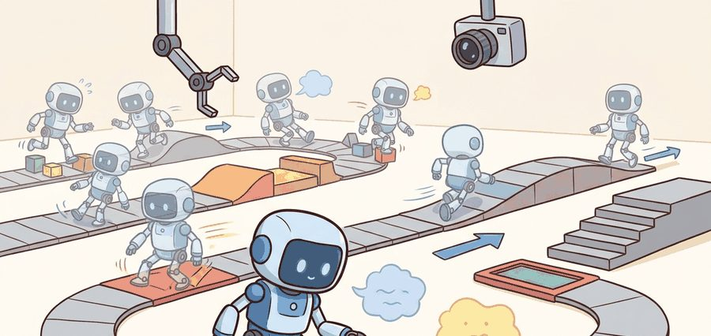
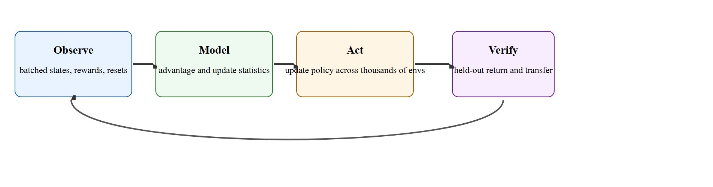

"GPU hours are only useful when they purchase better disturbance behavior."
A Locomotion Training Postmortem

This section assumes familiarity with policy-gradient updates and advantage estimation covered in sections 15.3 and 15.4, and with reward specification principles from section 18.2. The parallel-training techniques developed here are extended in section 45.4, which applies the same infrastructure to terrain adaptation and parkour. The sim-to-real gap that parallelism exposes is addressed in depth in section 20.2.
In 2019, a quadruped robot trained entirely in simulation walked onto a real forest trail and recovered from a stumble it had never physically experienced. The policy had seen that stumble thousands of times per training hour because 4,096 parallel simulators collectively covered rare contact events that a single sim would have missed for days. That result flipped how roboticists think about sample efficiency: the bottleneck is no longer data volume, it is whether the reward, termination, and randomization contracts are physically honest enough to be worth scaling. Here you will build that infrastructure, learn to audit it under scale, and understand why throughput without construct validity teaches the wrong behavior fast.
As Figure 45.3A illustrates, massive parallelism shortens the iteration loop but scales every uncaught mistake along with it. That is why the rest of this section pairs throughput with audit structure. A legged robot crossing uneven ground meets contact events that are individually rare but collectively decisive. Picture a front foot landing on a rock edge while the opposite rear foot is mid-swing, add a slight lateral slope, then add a brief actuator delay. A single simulator running at real-time speed might meet that combination once every several hours of simulated walking. With 4,096 parallel environments each stepping at hundreds of Hz, the same combination appears thousands of times per training hour. Put concretely, a rare stumble that a single environment sees roughly once per week of continuous simulation appears over 50,000 times in the same wall-clock period under full parallelism. That volume gives the policy enough gradient signal to learn a recovery strategy rather than falling. This is what researchers call the coverage-not-speed argument for parallelism: throughput is the mechanism, not the goal.
With batched simulators, the training objective is usually a clipped or trust-region policy update over many parallel trajectories. For Proximal Policy Optimization (PPO), one common objective is $L^{\mathrm{clip}}(\theta) = \mathbb{E}[\min(r_t(\theta) \hat A_t, \mathrm{clip}(r_t(\theta), 1-\epsilon, 1+\epsilon) \hat A_t)]$, where $r_t$ is the policy ratio and $\hat A_t$ is an advantage estimate computed here via Generalized Advantage Estimation (GAE), which the Step-Through worked example later in this section traces numerically across a termination boundary.
That objective is unchanged by scale, but the conditions under which its gradients are computed are not, and here parallelism changes the engineering problem. Correlated environment bugs, shared reward mistakes, and synchronized reset artifacts can make a policy appear strong across ten thousand workers while teaching the exact wrong behavior. The remedy is not less scale. It is better audit structure.
A fast RL stack is valuable only when the held-out terrain panel, transfer test, and failure taxonomy grow with it.
Figure 45.3.1 lays out the loop this section defends: the sample-update-randomize steps are necessary, but the final verify step on held-out terrain is what separates a scaled training run from a trustworthy result.

The main benefit of parallel RL in locomotion is coverage of contact events. This is the mechanism behind ETH Zürich and NVIDIA's Isaac Gym result (Rudin et al., 2022), which trained an ANYmal quadruped to walk in under 20 minutes on a single workstation GPU by stepping roughly 4,000 environments at once: rare combinations of foot timing, terrain discontinuity, and actuator lag that a real-time single simulator would meet once an hour appear thousands of times per minute when the fan-out is large.
The main risk is shared bias. If every environment uses the same flawed reward term, a thousand workers accelerate the same misunderstanding. This is why reward audits, termination audits, and observation audits belong in the same chapter as PPO code.
Of those three audits, the termination audit is the one whose failures hide most completely inside a healthy-looking loss curve, so it repays a closer look. A termination audit matters in embodied AI because ending an episode early cuts off the gradient signal for the exact recovery behavior a real robot needs most. If a fall termination fires at the wrong body-height threshold, the policy never learns to recover from partial stumbles, because the early cutoff removes those states from the training data before the policy ever encounters them. With 4,096 parallel environments, a threshold set 5 cm too high can typically discard on the order of 300,000 near-recovery transitions per training hour, though the exact figure depends on episode length, contact frequency, and how far above the true fall angle the threshold sits. Those same transitions would have been precious under real data collection, but here they vanish without a trace in the loss curve. On hardware, that gap surfaces as brittle falls from disturbances that training metrics never flagged. To audit terminations, collect a histogram of termination reasons across a random batch of episodes, replay any episode that ends in the first few steps, and check the termination trigger against the physical criterion it represents. Confirm, for example, that a torso-height cutoff marks a genuine fall angle and not a normal crouching gait.
A solid locomotion training paper therefore reports both throughput numbers and construct-matched disturbance metrics on terrain not used to tune the controller.
Detecting a bad termination threshold is only half the audit; the other half is correcting it without introducing a new failure mode. In practice, widen the torso-height or fall-angle threshold in small increments (for example 1-2 cm or 2-3 degrees per iteration), retrain, and recompute the termination-reason histogram after each change. Stop widening once the histogram shows a stable fraction of genuine falls (episodes that end with sustained ground contact of the torso or an unrecoverable orientation) rather than a fraction of recoverable stumbles being cut short. A threshold that is too loose creates its own failure: the policy learns to treat near-falls as normal and never terminates episodes that should end, which corrupts the return estimate in the opposite direction. The audit loop, tighten or loosen, replay, re-histogram, is the same iterative procedure whether the underlying bug is a termination threshold, a reward term, or a randomization range.
A useful heuristic: run the training distribution through a contact-event histogram. If the tail events (foot slip on wet surface, mid-air yaw disturbance, simultaneous left-right leg collision) each appear fewer than a few hundred times per policy update batch, the policy cannot reliably learn from them. Doubling environment count is worth doing when it moves rare events from the tail into the body of the distribution; it is not worth doing when the bottleneck is reward specification or terrain diversity. The ANYmal and MIT Cheetah training setups (circa 2020-2022) both used on the order of thousands of parallel environments precisely because their terrain curricula (staged sequences of terrain difficulty that increase only after the policy masters the easier stage) generated long-tailed contact distributions that single-environment runs could not saturate.
The smallest trustworthy artifact for large-scale locomotion RL is a run record that reports update count, sample count, held-out metrics, and transfer tags in one place.
run = {
"num_envs": 4096,
"horizon": 24,
"updates": 1200,
"heldout_fall_rate": 0.08,
"heldout_velocity_error": 0.11,
"transfer_tags": ["rough_terrain", "payload_shift"],
}
samples = run["num_envs"] * run["horizon"] * run["updates"]
print(f"samples={samples}")
print(
{
"heldout_fall_rate": run["heldout_fall_rate"],
"heldout_velocity_error": run["heldout_velocity_error"],
"transfer_tags": run["transfer_tags"],
}
)Expected output interpretation. The sample count looks impressive, but the useful signal is the held-out fall rate and velocity error. A run with more samples but worse held-out disturbance behavior is not an upgrade.
Generalized Advantage Estimation (GAE) is the technique used here, where the advantage at each timestep is built from a discounted, decayed sum of TD errors rather than a single-step or full-return estimate, trading bias against variance through the decay parameter $\lambda$. Trace through Generalized Advantage Estimation for one batched update with concrete numbers. Use discount $\gamma = 0.99$ and trace decay $\lambda = 0.95$. We have two environments stepped for three timesteps. Rewards per step are $r = [1.0, 1.0, 1.0]$ in both. Value estimates are $V = [5.0, 4.0, 3.0]$ and the bootstrap value after the last step is $V_{\text{boot}} = 2.0$. The difference is the done flags: env A never terminates ($done = [0, 0, 0]$); env B terminates on its final step ($done = [0, 0, 1]$).
Env A, step 3 (no termination): the TD error uses the bootstrap. $\delta_3 = r_3 + \gamma \cdot V_{\text{boot}} \cdot (1 - done_3) - V_3 = 1.0 + 0.99 \cdot 2.0 \cdot 1 - 3.0 = -0.02$. Advantage $\hat A_3 = \delta_3 = -0.02$.
Env B, step 3 (termination): the $(1 - done_3)$ factor zeroes the bootstrap. $\delta_3 = 1.0 + 0.99 \cdot 2.0 \cdot 0 - 3.0 = -2.0$. Advantage $\hat A_3 = -2.0$.
Step back to step 2. Env A: $\delta_2 = 1.0 + 0.99 \cdot 3.0 - 4.0 = -0.03$, then $\hat A_2 = \delta_2 + \gamma \lambda (1 - done_2) \hat A_3 = -0.03 + 0.9405 \cdot (-0.02) = -0.049$. Env B: $\delta_2 = -0.03$ as well, but $\hat A_2 = -0.03 + 0.9405 \cdot (-2.0) = -1.911$.
The same rewards and values produce advantages that differ by nearly $2.0$ at step 2 purely because of one done flag. Forget the $(1 - done)$ mask and env B silently inherits env A's optimistic bootstrap, teaching the policy that falling off a cliff is only mildly worse than walking. That is exactly the corruption the Isaac Lab tip above warns about, made numeric.
Use Isaac Lab for GPU throughput, MJX (MuJoCo's JAX-native physics engine, which lets rollouts run as compiled, vectorized JAX operations) when JAX-native pipelines matter, and RSL-RL or equivalent PPO tooling when you need a maintained actor-critic training core rather than a handwritten optimizer.
In Isaac Lab, a terminated environment is reset within the same physics step, so the observation returned after a done flag already belongs to the new episode. If your PPO implementation bootstraps the value at the terminal step without masking on dones, that bootstrap uses a value from the next episode's initial state, silently corrupting the advantage estimate for the final transition. Pass dones as a boolean mask to your Generalized Advantage Estimation (GAE) implementation and multiply the bootstrap term by (1 - done) before accumulating returns. RSL-RL does this correctly by default; hand-rolled training loops frequently do not.
Think of it like a factory where every worker follows the same flawed recipe. If one cook mistakenly adds salt at the wrong stage, having a thousand cooks working simultaneously does not reveal the error through averaging; it produces a thousand salty dishes in the same amount of time. Each worker faithfully amplifies the recipe's mistake. The only way to catch the bad recipe is to taste the finished dish against a dish made by a different process entirely, not to count how many cooks followed the instructions. In massively parallel RL, the "tasting" step is evaluation on held-out terrain that the training reward never touched.
A common assumption is that more parallel environments means more independent evidence. Under this view, a policy trained with 4,096 environments should be four thousand times better-informed than one trained with a single environment. That assumption is wrong. All workers share the same reward function, termination logic, and randomization parameters. A bug in any of those contracts replicates identically across every environment, so parallelism amplifies the mistake rather than averaging it out. A policy can converge rapidly with high training-set return simply because thousands of workers learned the same shortcut together. Parallelism increases coverage of rare contact events. It does not increase the trustworthiness of the reward signal. Coverage and construct validity are orthogonal: you must establish each one independently.
The most common failure is a reward term or reset rule that creates an easy exploit across every worker. Scale hides that exploit until transfer fails.
A quadruped may learn to skim over termination thresholds by hopping in a brittle rhythm that looks effective in the training terrain family. A held-out curb panel or a small actuator-delay mismatch often exposes the weakness immediately.
ANYbotics ships the ANYmal quadruped for autonomous inspection of offshore platforms and industrial sites, where its locomotion controller was trained in NVIDIA Isaac Gym across roughly 4,000 parallel environments to reach a walking policy in minutes rather than days (Rudin et al., 2022). The decisive ingredient was not raw throughput but held-out terrain evaluation: the same parallel coverage that exposed the policy to rare contact events also let engineers measure fall rate on terrain classes the training curriculum never tuned against before clearing the robot for real catwalks and gratings.
Parallel RL is a microscope and a funhouse mirror at the same time. It reveals more events, but it enlarges every bug you forgot to measure.
Three active directions are reshaping how massively parallel RL produces locomotion policies that survive real hardware.
Whole-body control via parallel humanoid RL. As of 2024-2025, the dominant application of massive parallelism has shifted from quadrupeds to full humanoids. Figure AI's Helix (2025) and Berkeley Humanoid (Liao et al., 2024) both train whole-body policies across tens of thousands of Isaac Lab or Isaac Gym environments, coupling loco-manipulation (combined locomotion and manipulation, walking while the arms perform a task) objectives so the arm and leg policies share a single neural network updated by the same PPO gradient. The key technical challenge is termination design: a humanoid has far more failure modes per step than a quadruped, so curriculum-gated termination conditions (termination thresholds that loosen or tighten as the training curriculum advances, mirroring the terrain-difficulty staging described earlier in this section) become a first-class design decision rather than an afterthought.
World-model-augmented parallel RL. Groups including CMU and Stanford (2024-2025) are embedding learned world models inside the parallel rollout loop: instead of purely physics-simulator steps, a small latent-dynamics model generates imagined continuations for rare contact branches, supplementing the simulator's ground-truth rollouts. This lets a fixed simulator budget cover a wider tail of disturbance events without quadrupling real physics workers. The trade-off is that world-model errors can introduce systematic bias; auditing learned rollouts against held-out physical traces is an open calibration problem.
So far: massive parallelism has moved from single-robot quadruped locomotion toward whole-body humanoid control, and researchers are now supplementing physics simulators with learned world models to stretch a fixed compute budget across an even wider tail of rare events.
Before reading on, consider: how much real robot interaction time would you guess is needed to fine-tune a simulation-trained policy onto a new quadruped body it has never physically inhabited? The answer from recent cross-embodiment work is striking: fewer than 30 minutes. Foundation locomotion policies with few-shot hardware fine-tuning. Large-scale pre-training across hundreds of morphologies in simulation, then rapid fine-tuning on a specific robot with a small real-world dataset, has emerged as a practical paradigm. Unitree and CMU's work on cross-embodiment locomotion pre-training (2024) shows that a policy pre-trained on diverse simulated robots can transfer to a new quadruped morphology with on the order of 30 minutes of physical interaction in the reported cases, where the parallel simulation phase generates the shared representation and the hardware phase only refines contact-specific parameters; the fine-tuning time in practice depends on how different the new morphology is from the pre-training distribution.
Open problem. All three directions rely on a held-out evaluation panel to validate that parallel training generalizes, but there is no principled method to choose which terrain or disturbance classes belong in that panel before training starts. A panel that is too similar to the training distribution gives false confidence; a panel that is too adversarial never shows improvement. Designing an adaptive evaluation protocol that grows the held-out panel by identifying coverage gaps in the training distribution is an open and tractable research problem.
Can you name one statistic that proves your RL loop scaled, and one statistic that proves the extra scale improved actual locomotion behavior rather than just training throughput?
Parallel sampling is not just a compute trick. It reshapes the statistics of the data, raises the odds of correlated bugs, and changes the diagnostics needed to trust a result, tying RL theory directly to the simulator and deployment stack.
Construct-matched comparisons are equally important. If a baseline uses flat ground and a new method uses rough terrain plus curriculum plus actuator randomization, the numbers are not comparable no matter how impressive the learning curve looks.
| Tool or Library | Role in the Topic | Builder Advice |
|---|---|---|
| Isaac Lab | GPU-parallel locomotion training | Use manifest files for reward, reset, and randomization. |
| MJX | Fast JAX-native physics for batched control experiments | Exploit JAX tooling, but keep evaluation manifests identical. |
| RSL-RL or similar PPO stack | Maintained on-policy training core | Patch your task logic, not the optimizer, unless there is a clear reason. |
Connect this section to PPO and actor-critic theory, scalable RL systems, and sim-to-real transfer.
Train a small locomotion controller at two parallelism levels, then compare not only wall-clock but also held-out disturbance metrics and failure traces.
A policy that runs flawlessly across ten thousand simulators but stumbles on its first real curb is not a trained controller; it is a well-rehearsed illusion. If a fast training run fails on transfer, inspect reward decomposition, reset clustering, observation leakage, and actuator mismatch before tuning the policy network. In locomotion RL, environment bugs often masquerade as optimization problems.
Isaac Lab documentation. https://isaac-sim.github.io/IsaacLab/
Primary documentation for current large-scale robot-learning workflows.
Margolis, G. et al. "Rapid Locomotion via Reinforcement Learning." Code repository. https://github.com/Improbable-AI/rapid-locomotion-rl
Concrete RL reference point for agile locomotion training.
MuJoCo MJX documentation. https://mujoco.readthedocs.io/en/stable/mjx.html
Primary source for batched MuJoCo workflows in JAX.
Large-scale RL becomes scientific when the throughput report and the disturbance evidence report travel together.
Design a training ledger for a locomotion RL study. Include the environment manifest, update budget, reward terms, held-out panel, and one diagnostic that would catch a synchronized reward bug.
Beginner (weekend): Train a planar hopper or ant agent to walk on flat terrain using Gymnasium's MuJoCo environments with a hand-written PPO loop; the key challenge is auditing the reward decomposition so you can confirm the agent actually learned stable gait rather than a stationary exploit that maximizes survival time. Intermediate (1-2 weeks): Set up an Isaac Lab locomotion task with 512 or more parallel environments and a held-out terrain panel (add a curb class not seen during training), then measure how fall rate on the held-out panel changes as you double environment count from 256 to 2048; the key challenge is building the audit loop, specifically logging per-term rewards and termination reasons, so that scaling decisions are grounded in coverage evidence rather than training-curve aesthetics. Stretch (3-4 weeks): Reproduce the two-phase RMA (Rapid Motor Adaptation) pattern, where a base policy first trains with privileged ground-truth terrain information and a second adapter module later learns to infer that same information from proprioception alone, using MuJoCo MJX for the base policy and a 30-step proprioceptive adapter: train the base policy with ground-truth terrain factors in PyBullet or MJX, then distill the adapter from proprioception alone and test transfer under actuator-delay mismatch; the key challenge is keeping the observation and randomization manifests identical across both phases so that adapter failures are attributable to real distributional gaps rather than configuration drift.